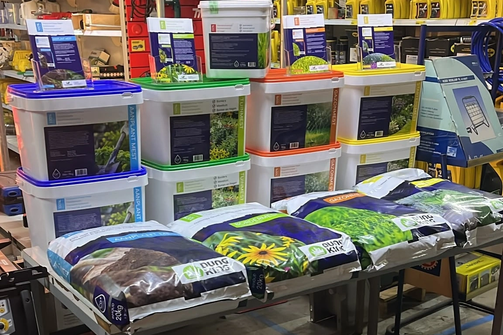

Dungking kopen op een plek in de buurt
We willen het makkelijker maken om een passende meststof te kopen. Daarom zijn we blij met dit extra verkooppunt in Noord-Brabant. Woon of werk je in de omgeving van Wanroij? Dan kun je Dungking voortaan meenemen bij een bezoek aan Vos. Handig als je toch al op pad gaat voor tuinmateriaal of gereedschap.
Dungking bestaat uit verschillende meststoffen op basis van insectenmest. Welke je kiest, hangt af van wat je wilt verzorgen en het moment van toepassen. Een gazon, een bestaande border en een pas geplante haag vragen niet automatisch om dezelfde voeding. In ons productoverzicht met toepassingen en verpakkingen kun je de verschillen bekijken.
Waarom Dungking en Vos goed bij elkaar passen
Handelsonderneming Vos heeft in Wanroij een winkel en werkplaats. Voor tuin- en parkonderhoud verkoopt het bedrijf onder meer tuinmachines en elektrisch en handtuingereedschap. Ook onderhoud en reparatie horen bij het aanbod. De meststoffen sluiten daar logisch op aan: naast het gereedschap voor het onderhoud kun je er nu ook voeding voor je tuin halen.
Hier vind je het nieuwe verkooppunt
Handelsonderneming Vos
Bus 6
5446 PK Wanroij
Telefoon: 0485-451206
Bekijk de website van Handelsonderneming Vos voor de actuele openingstijden. Bel vooraf als je voor een specifieke meststof of verpakking komt; zo voorkom je een onnodige rit.
Wat heeft je tuin in november nodig?
November is nog herfst. De meteorologische winter begint op 1 december. Toch kan het al koud en nat zijn: kijk bij tuinonderhoud dus naar de omstandigheden en niet alleen naar de kalender.
- Haal blad van het gazon. Zo blijft de grasmat vrij. Controleer meteen of er plassen of kale plekken zijn.
- Beoordeel of een najaarsgift nog past. Voor gazons noemt de Dungking-productinformatie september tot en met november voor de toepassing met Border- en Najaarsmest. Bemest alleen als bodem en gras nog geschikt zijn. Wacht bij vorst, verzadigde grond, droogtestress of stilgevallen groei.
- Stem voeding af op je eerdere bemesting. Heb je dit najaar al gestrooid? Voeg dan niet automatisch nog een gift toe. Meet het oppervlak en volg het etiket van jouw product.
Lees ons advies over gazon bemesten in het najaar voor de periode, productkeuze en dosering. Een passende hoeveelheid kopen voorkomt ook dat je meer aanschaft dan je nodig hebt.
Ook nog gewoon verkrijgbaar in Landhorst
Je blijft natuurlijk welkom bij Eco Yard Supply aan Tweede Stichting 9, 5445 NZ Landhorst. Bezoek en afhalen zijn hier alleen mogelijk op afspraak. We denken graag met je mee over de juiste meststof en hoeveelheid voor jouw tuin of groenproject.
Klaar voor de volgende tuinklus?
Haal jouw Dungking meststof bij Handelsonderneming Vos in Wanroij, of maak een afhaalafspraak bij ons in Landhorst. Twijfel je wat je tuin nu nodig heeft? Neem contact op met Eco Yard Supply en vertel wat je wilt verzorgen, hoe groot het oppervlak is en wanneer je voor het laatst hebt bemest.
Veelgestelde vragen
Veelgestelde vragen
Waar kan ik Dungking meststoffen kopen in Wanroij?
Bij Handelsonderneming Vos aan Bus 6, 5446 PK Wanroij. Bel voor een specifiek product of een bepaalde verpakking vooraf naar 0485-451206.
Kan ik Dungking ook nog bij Eco Yard Supply in Landhorst ophalen?
Ja. De producten blijven verkrijgbaar aan Tweede Stichting 9, 5445 NZ Landhorst. Bezoek en afhalen zijn alleen mogelijk op afspraak via Eco Yard Supply.
Kan ik mijn gazon in november nog bemesten?
Alleen als bodem, gras en eerdere bemesting daar aanleiding toe geven. De Dungking-gazonrichtlijn noemt september tot en met november voor Border- en Najaarsmest. Bemest niet bij vorst, verzadiging, droogtestress of stilgevallen groei. Volg de actuele verpakking.
Is november al winter?
Nee, november valt in de meteorologische herfst. De meteorologische winter begint op 1 december. Voor bemesting blijven de omstandigheden in jouw tuin bepalend.